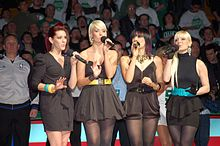
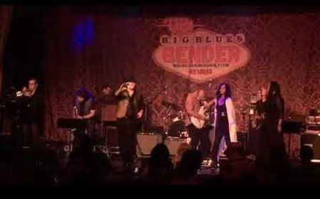
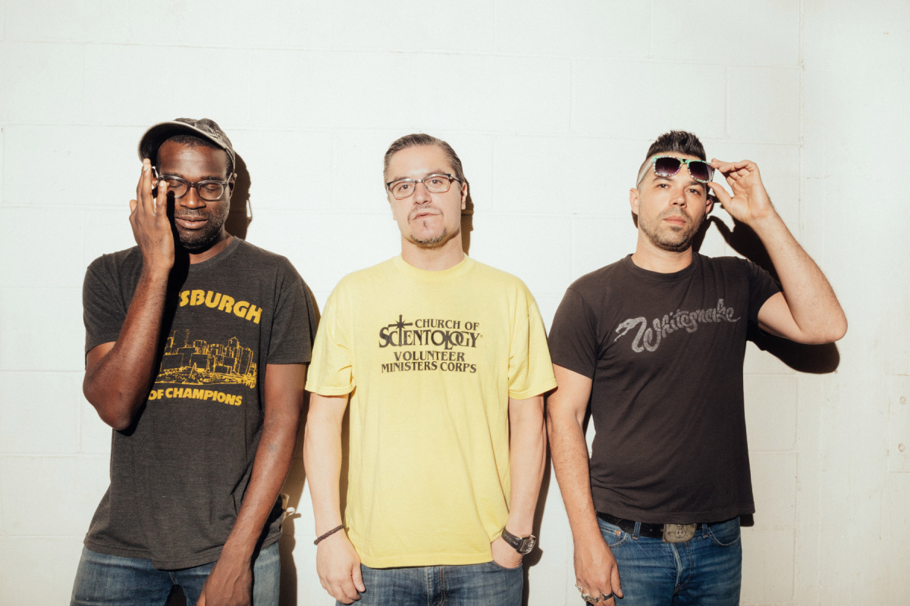
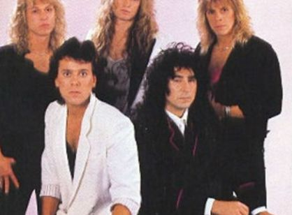
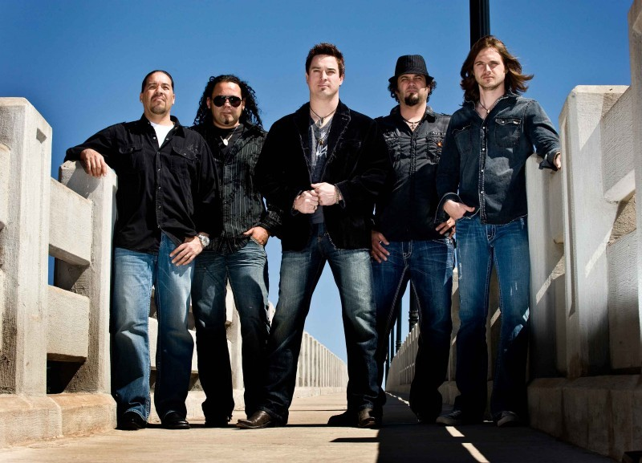
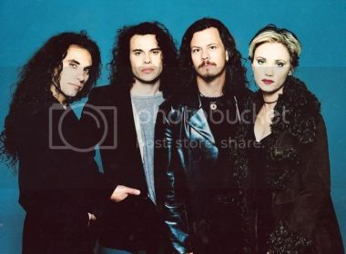
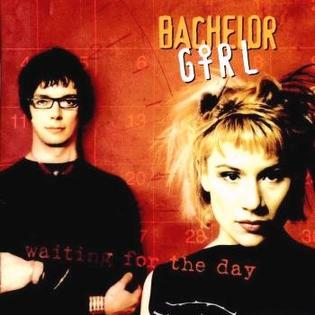
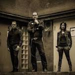
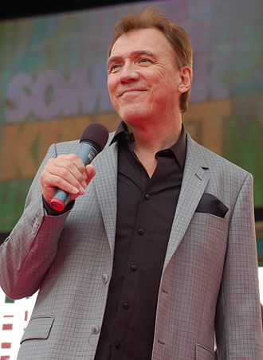
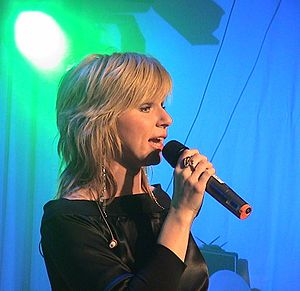

| Known mmusical groups | |||||
|---|---|---|---|---|---|
| BILD | NAMN | MEDLEMMAR | LAND | SENASTE ALBUM | KÄLLOR |
|  | Jada |
Lauren O'Keefe Jacyn Tremblay April Forrest Elle Wine |
USA | This Party’s on Fire | Wikipedia |
|  | Jack Mack |
Bill Bergman Mark Campbell Roy Weigand Carlos Murguia Kathy Merrick Niki J Crawford Richard Grossman Greg Brown |
USA | Jealous Heart | Wikipedia |
|  | Nevermen |
Tunde Adebimpe Mike Patton Adam Drucker |
USA | Dark Ear | Wikipedia |
|  | Alien |
Jim Jidhed Tony Borg Jimmy Wandroph Toby Tarrach Ken Sandin |
Sweden | The Tower | Wikipedia |
|  | No Justice |
Chook Chalhoub Brendan O'Keefe Mark Heggart |
Australian | Criminal | Wikipedia |
|  | Baby Animals |
Suze DeMarchi Dave Leslie Dario Bortolin Mick Skelton |
Australian | Shaved and Dangerous | Wikipedia |
|  | Bachelor Girl |
Tania Doko James Roche |
Australian | Shaved and Dangerous | Wikipedia |
|  | Demons |
Mathias "Hep Cat Matt" Carlsson Micke Jacobsson |
Sweden | Alaska Productions | Wikipedia |
|  | Vikingarna |
Kenneth Wahlberg Erik Lihm Kenth Andersson Johan Norgren Martin Lindqvist Chris Andersen |
Sweden | The Return | Wikipedia |
|  | Vikingarna | Anneli Magnusson | Sweden | Head Up High | Wikipedia |